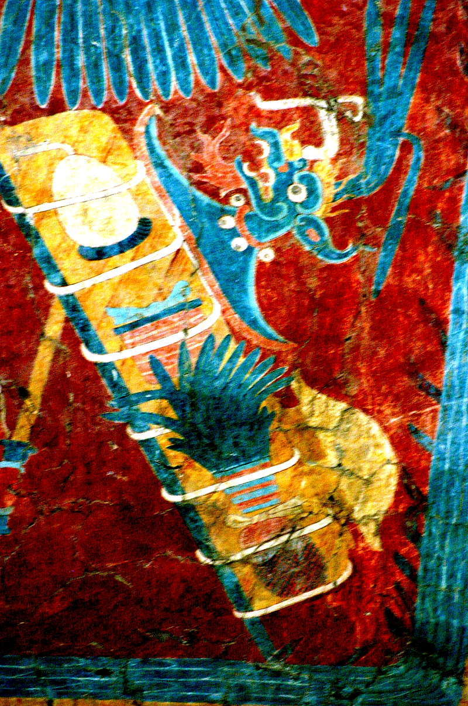
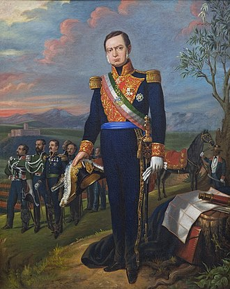
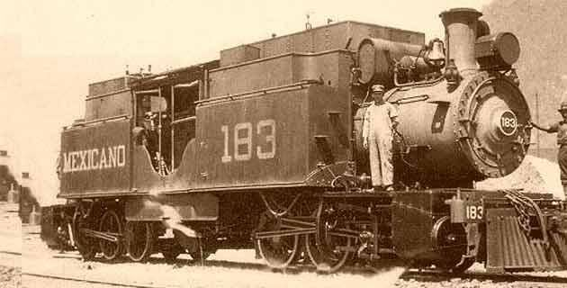

HISTORIA

La hacienda de Nanacamilpa que da el nombre al municipio fue fundada en 1581, gracias a la merced que la Corona española le otorgó a Juan de Villerías. El actual Palacio Municipal se constituyó en la otrora casa grande de la exhacienda, mientras que la actual iglesia sobre la antigua capilla.
Primeros pobladores
La historia del municipio, creado en 1858, no comienza con esta fundación, sino varios siglos atrás, tras las exploraciones realizadas por el INAH en la región de Calpulalpan, se han detectado 18 sitios arqueológicos, cuyos vestigios materiales se remontan cuando menos al año 150 a.n.e.
El Centro de Estudios Municipales de Tlaxcala, afirma que los primeros pobladores del territorio en que esta asentado el municipio fueron los olmecas-xicalancas y que, posteriormente, fue ocupado por los chichimecas (últimos pobladores tlaxcaltecas).
Sin embargo, los trabajos de Angel García Cook y Leonor Merino Carrión, investigadores del INAH, no corroboran la afirmación anterior. Únicamente señalan que tanto el extremo noroeste como el norte central de Tlaxcala, fueron ocupados hacia el año 150 a.n.e., por grupos procedentes del Golfo Central o de “Cantona“. Este último situado en el estado de Puebla.
Independencia
La presencia de Mariano Arista (presidente de México en el periodo 1851-1853), en Calpulalpan atrajo a muchos rancheros mestizos e indígenas, entre ellos, los de Nanacamilpa, quienes participaron en las acciones que emprendió́ el caudillo insurgente en el territorio que iba de Calpulalpan hasta Zacatlán. La Independencia no trajo cambios sustanciales en la vida de los lugareños de Nanacamilpa. En general, esta hacienda, como las de Sanctórum, Calpulalpan y Españita, dedicaron sus esfuerzos al cultivo del maguey como la producción agrícola más importante.
Ferrocarril Interoceánico
La hacienda de Nanacamilpa, juntamente con la de San Bartolomé del Monte, San Nicolás el Grande e Ixtafiayuca, fueron las más beneficiadas con la inauguración del Ferrocarril Interoceánico, a fines del siglo pasado, que unía los puertos de Veracruz y la ciudad de México. La reactivación comercial de la región de Calpulalpan se centró sobre todo en los embarques de pulque a la ciudad de México, donde era muy demandado por su alta calidad. La hacienda de Nanacamilpa a mediados del siglo XIX perteneció al presidente de la República, general Mariano Arista, pero que a fines del mismo, era ya una colonia de campesinos o sociedad agrícola, incluidos los ranchos Los Capestines y Bartolito.